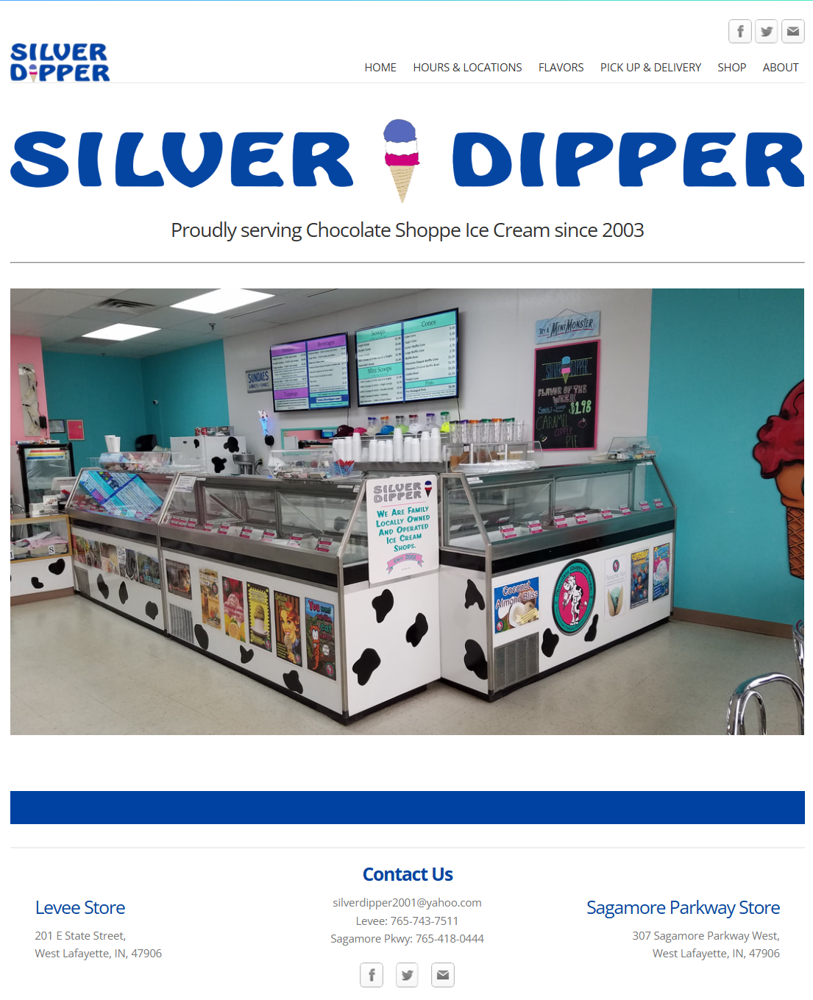
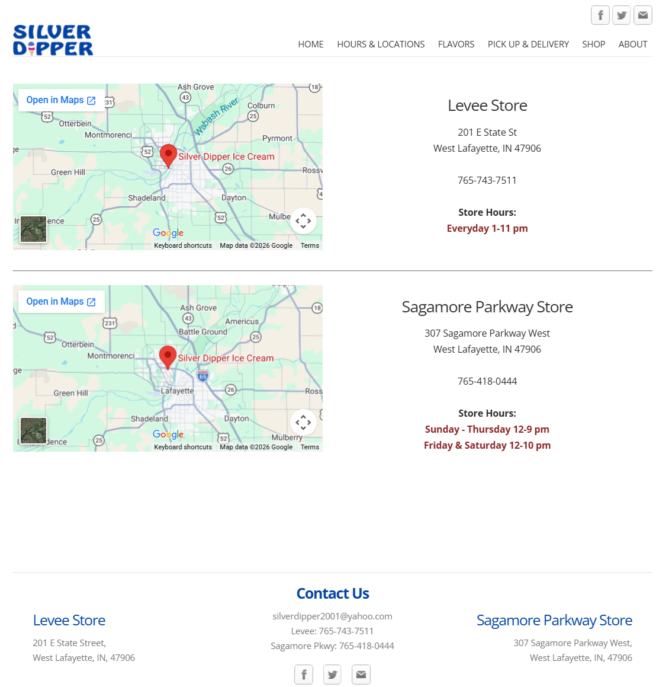
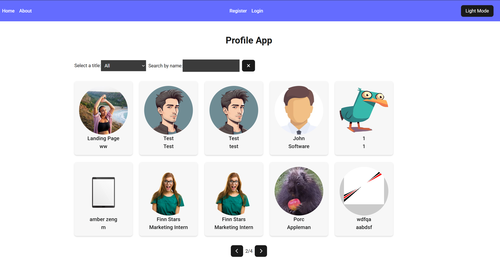
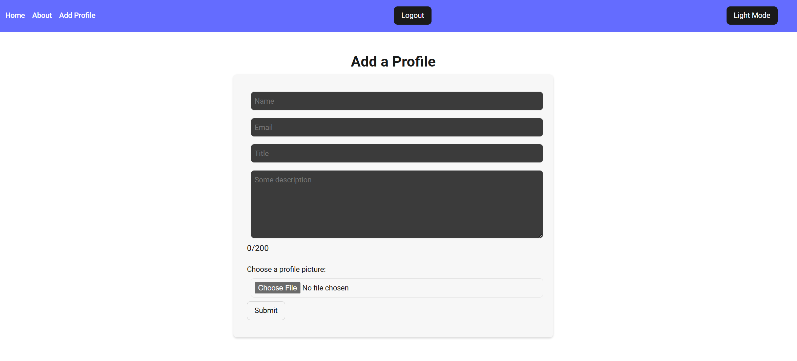
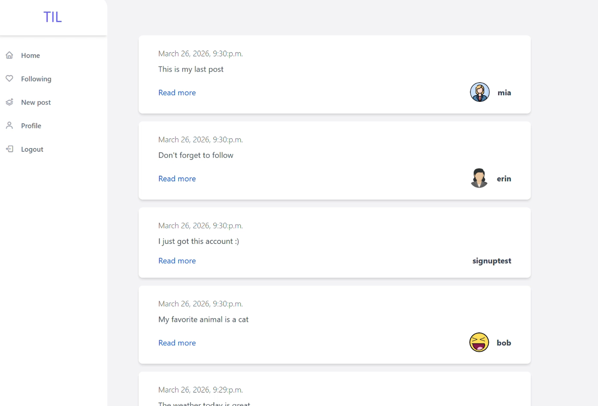
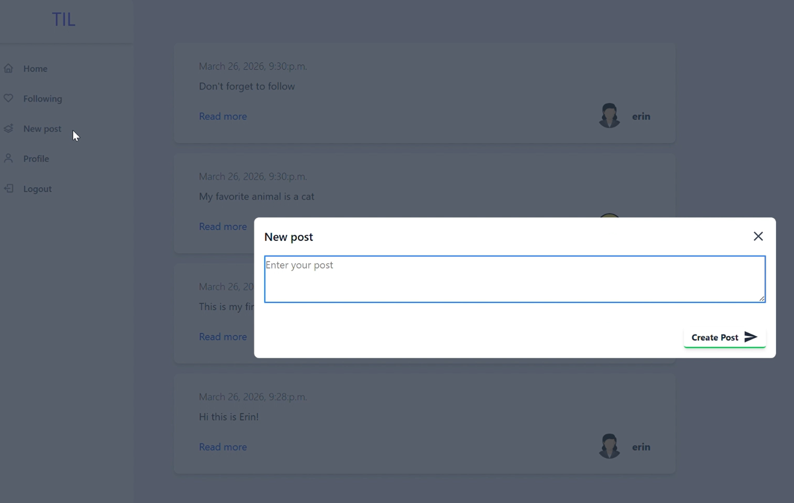

Hover interactions
Uses hover states to reveal additional content without interrupting the page flow. Hover with a mouse, or activate with the keyboard.
01 · Development
Front-end development with JavaScript, React, and responsive UI, alongside full-stack work with C#, PHP, SQL, Django, and Python. The examples below show some of those skills in action, followed by selected projects and coursework.
Proof, not prose
Instead of just listing technologies, I wanted to show what I can actually build with them. Try a few of the interactions below!
Uses hover states to reveal additional content without interrupting the page flow. Hover with a mouse, or activate with the keyboard.
A JavaScript-powered gallery with controls for moving between items.
Drag the handle (or use arrow keys) to resize the panel and watch a responsive layout react through CSS media queries.
An image magnifier built with JavaScript. Move a pointer across the image to inspect fine detail.
Waiting for input…
Validates form input as it's entered, with immediate feedback.
Follow, unfollow, and watch the interface update instantly — a small example of managing changing UI state.
Three projects that show different sides of my development work: React-based interfaces, component-driven applications, and a full-stack Django application.
React Website Replica
Recreated the six-page Silver Dipper website in React, focusing on reusable components, routing, and accurately reproducing the original interface.


React · Hooks · Forms
Built a React application with registration, login, profile management, form validation, and searchable, paginated profile browsing.


Django · Python · Full-Stack
Built a social feed application in Django and Python with user authentication, post creation, and a following system.


A selection of smaller projects and coursework covering JavaScript, interaction, responsive design, animation, and other web fundamentals.
Creature Creator — An interactive page where the user can choose a creature, hat, and background, with hover states, a sliding gallery, and reset button.
Whack-a-Star — A browser game with a timer, score counter, and separate start, playing, and reset states.
An about-me site combining a university rankings data table with a clickable "10 interesting things" gallery.
Payment and mood-tracker forms with multiple input types and progress indicators that update as the user completes each section.
A set of small interaction exercises covering hover effects, clickable images, and show/hide toggles.
↑ try it live aboveExercises in CSS positioning and animation, including fixed sidebars, moving elements, drop-down ads, and bouncing objects.
A sliding image gallery with arrow and dot navigation, plus thumbnail previews on hover.
↑ try it live aboveThree responsive webpages using media queries to adapt layouts across different screen sizes.
↑ try it live aboveTwo image-zoom exercises: a hover zoom with a dedicated zoom window and a page with switchable zoomable images.
↑ try it live aboveAn interactive curriculum page with a rotating selection wheel that updates the displayed content when a name is selected.
Additional experience — C#, PHP, SQL, REST APIs, jQuery, Bootstrap